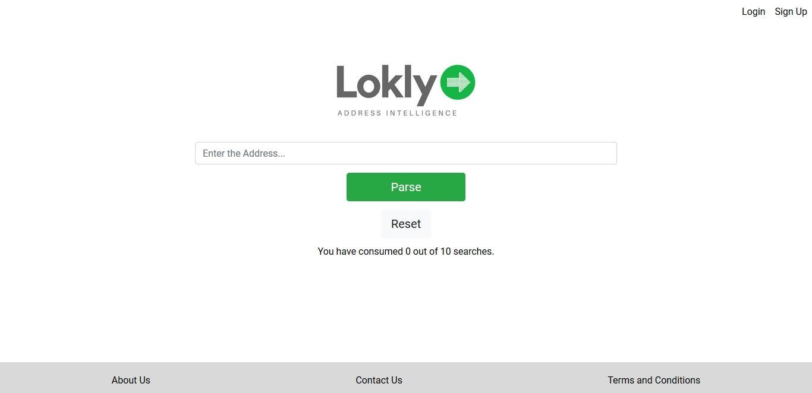
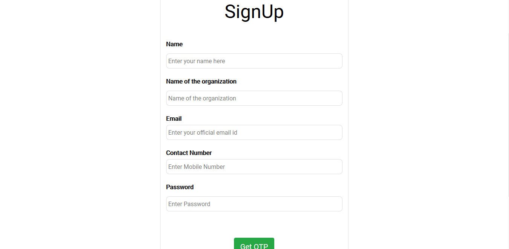
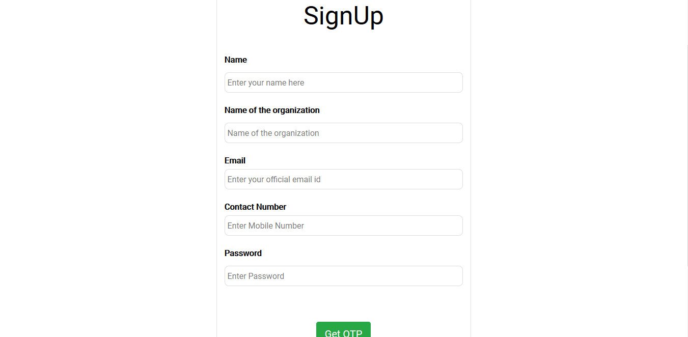

Back
Lokly - Indian Adress Parser
Lokly - Indian Adress Parser
What is it about?
Addresses often provide a significant amount of intelligence about the buying and spending habits of a consumer. In most cases this intelligence cannot be determined from the address as most of the addresses are free flowing text and are not easily parsed. Faced with these challenges we have created an address parser exclusively for Indian addresses. Lokly the Indian address parser helps you parse an address contained in a free flowing string. Divide a single address (as string) into separate component parts : house number, street type (bd, street, ..), street name, unit (apt, batiment, ...), zipcode, state, country, city etc. Soon we would be adding intelligence around the neighborhoods to help you determine the economic value of the addresses.
How it works?
Just go to www.lokly.in and enter the address. The request will be passed as an API to the backend where the predictions are made. The results are then returned back to the front-end. There is a option to careate an account to have access to more number of searches.
How we made it?
A dataset with just Indian Addresses was provided. It was decided to go ahead with Stanford-ner-tagger to create our custom Part of Speech tagging. We started with pre-processing the data, removed the punctuations, hannged all words to lowercase. We then tagged the words with the corresponding labels and trained the model. We trained 102082 words in total which sums up to around 13000 words with an average of 8 words per address. We acheived the accuracy of 83% with this model.
Scope for improvements?
There is definitely a huge scope for future improvements with accurate data-tagging. Several new NLP algorithms have came and the accuracy if the model can be improved by trying out other Machine Learning Algorithms.



